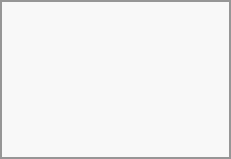

You can access files in Linux operating systems utilizing the following methods.
When you configure your
You can also mount your
davs://example.com/acmehub/remote.php/dav/files/USERNAME/
If your server connection is not HTTPS-secured, use dav:// instead of davs://:

The same method works for other file managers that use GVFS, such as MATE's Caja and Cinnamon's Nemo.
Navigate to System Settings -> Networking -> Online Accounts
Click "Add Account..."
Simply click
Enter your server address
Follow the on-screen instructions to log in
After logging in, ensure you enable "Storage" in the "Use This Account For" section
You can now access your files in Dolphin under "Network" in the sidebar
(Optional) To add this location as a shortcut in the sidebar, right-click "
(Optional) To customize the shortcut, right-click it in the sidebar, then click "Edit..." and customize the icon and label